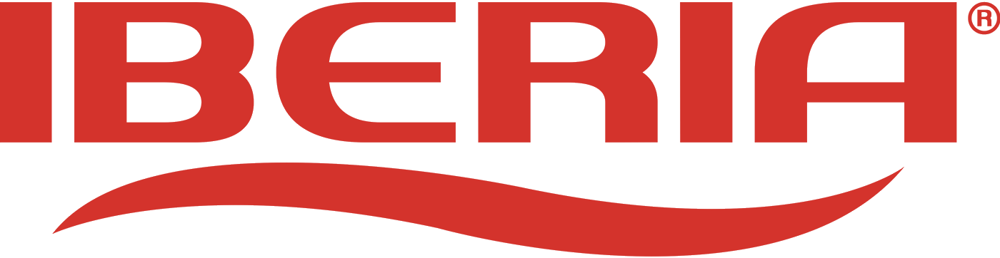

Plataforma Iberia · Seguridad y cumplimiento
Quiénes son Supabase, Netlify y Resend, dónde quedan los datos de Industrias Iberia, qué certificaciones y controles tienen, cómo está configurada la instancia de Iberia y qué recomendamos reforzar.
Para: Gerencia de Tecnología de la Información, Industrias Iberia, C.A. · Preparado por Boosty Digital · 26 de noviembre de 2026 · Uso interno
La Plataforma Iberia (portal.industriasiberia.com) se apoya en tres proveedores de servicios en la nube. Las cuentas de Supabase y de Netlify están a nombre de Industrias Iberia. La base de datos, los archivos, los respaldos y las funciones del servidor están en Amazon Web Services, región us-east-1 (norte de Virginia, Estados Unidos). Toda la comunicación va cifrada.
| Proveedor | Qué hace en la plataforma | Empresa | Dónde quedan los datos de Iberia | Certificaciones |
|---|---|---|---|---|
| Supabase | Base de datos, usuarios y acceso, archivos, tiempo real | Supabase Pte. Ltd. (Singapur) | AWS us-east-1, norte de Virginia, EE. UU. Los registros de actividad se guardan en la Unión Europea | SOC 2 Type 2 · ISO/IEC 27001:2022 |
| Netlify | Publica el sitio, sirve las páginas y ejecuta las funciones del servidor | Netlify, Inc. (Delaware; sede en San Francisco, EE. UU.) | Funciones en AWS us-east-1. Páginas estáticas desde su red de distribución global | SOC 2 Type 2 · ISO 27001 · ISO 27018 · PCI DSS 4.0 |
| Resend | Correo de notificaciones. Aún no activo: falta verificar el subdominio de Iberia | Plus Five Five, Inc. (San Francisco, EE. UU.) | Estados Unidos (AWS) | SOC 2 Type II |
Todo lo de este documento se verificó el 26 de noviembre de 2026 en las páginas oficiales de cada proveedor; cada dato lleva su fuente. La configuración de la instancia de Iberia se leyó ese mismo día de las consolas de Supabase y Netlify. Lo que no se pudo confirmar se dice expresamente.
El recorrido de una consulta, desde que una persona abre la plataforma.
| Paso | Dónde ocurre | Protección |
|---|---|---|
| 1. La persona entra a portal.industriasiberia.com | Red de distribución de Netlify | HTTPS obligatorio (TLS) |
| 2. El servidor arma la página o atiende la acción | Funciones de Netlify sobre AWS, us-east-1 | Claves en variables de entorno secretas, nunca en el navegador |
| 3. Se leen o escriben datos | Supabase sobre AWS, us-east-1 | Cada consulta pasa con la sesión de la persona y la seguridad por fila (RLS) de la base |
| 4. Archivos (documentos, adjuntos) | Supabase Storage, us-east-1 | Buckets privados; descarga por enlace firmado de 60 segundos |
| 5. Correo de notificaciones (cuando se active) | Resend, EE. UU. | TLS 1.3; dominio autenticado con SPF y DKIM |
| 6. Asistente de IA y voz | Anthropic, OpenAI y Microsoft Azure (anexo A) | API comerciales sin entrenamiento con los datos del cliente |
| Organización y plan | «Industrias Iberia, C.A», plan Pro |
| Proyecto | «Iberia Project», creado el 11 de agosto de 2026 |
| Región | us-east-1, norte de Virginia (AWS) |
| Motor y capacidad | PostgreSQL 17.6 · cómputo Small (2 vCPU compartidos, 2 GB de memoria) |
| Respaldos | Diarios físicos, 7 días activo · PITR no contratado |
| Seguridad por fila (RLS) | Activa en todas las tablas: cada consulta solo ve lo que su rol permite |
| Registro de cuentas | Cerrado: las cuentas solo las crea la administración |
| Archivos | Buckets privados; descargas por enlace firmado de corta duración |
| Secretos | Credenciales de integraciones en Vault, cifradas |
| Conexión directa a la base | Abierta a cualquier red y sin SSL obligatorio a reforzar |
| Contraseñas | Mínimo de 6 caracteres a reforzar |
| Equipo y plan | «Industrias Iberia», plan Pro |
| Sitio | Creado el 17 de agosto de 2026 |
| Dominio | portal.industriasiberia.com (oficial) · iberiavenezuela.netlify.app (se mantiene para enlaces ya enviados y las apps) |
| HTTPS | Obligatorio, certificado automático |
| Región de las funciones | us-east-1, la misma de la base de datos |
| Publicación | Automática desde el repositorio privado en GitHub, rama principal |
| Credenciales | Variables de entorno; nunca en el código ni en el navegador |
Estado: la integración está construida pero no envía nada hasta que se verifique el subdominio de correo de Iberia con sus registros DNS.
La plataforma ya opera con cifrado, seguridad por fila y cuentas a nombre de Iberia. Estos ajustes la llevan al nivel que una auditoría suele pedir. La mayoría no tiene costo; los que tienen, lo dicen.
| # | Qué | Por qué | Costo |
|---|---|---|---|
| 1 | Exigir SSL y restringir por red las conexiones directas a la base (Supabase) | Hoy la conexión directa acepta cualquier red y no obliga SSL. La plataforma no la usa: entra por las API, que ya van cifradas | Sin costo |
| 2 | Exigir verificación en dos pasos en las consolas de Supabase y Netlify | Quien entra a la consola puede ver la configuración y los datos. Ambos lo permiten exigir desde el plan Pro | Sin costo |
| 3 | Subir el mínimo de las contraseñas de la plataforma a 10 caracteres y ofrecer verificación en dos pasos a los administradores | Hoy el mínimo es de 6 | Sin costo; la verificación en dos pasos requiere un desarrollo corto |
| 4 | Contratar la recuperación a un punto exacto (PITR) en Supabase | Con respaldos diarios, la pérdida máxima es de hasta 24 horas; con PITR, de 2 minutos | Desde unos USD 100 al mes |
| 5 | Respaldar aparte los archivos de Storage | Los respaldos de la base no incluyen los archivos | Bajo: almacenamiento externo |
| 6 | Si la auditoría exige los informes SOC 2 o ISO de Supabase, pasar al plan Team | Con el plan Pro no se pueden descargar | USD 599 al mes |
| 7 | Abrir la cuenta de Resend a nombre de Iberia, con una clave que solo pueda enviar desde su subdominio, y publicar DMARC | Que el correo de la empresa dependa de una cuenta propia y con el mínimo permiso | Sin costo en su plan gratuito |
| 8 | Registrar quién administra cada consola y revisarlo cada trimestre | Cambios de personal; la auditoría pregunta quién tiene acceso | Sin costo |
Fuentes: SSL enforcement · network restrictions · MFA de organización · 2FA de Netlify · backups y PITR · planes de Supabase · claves de Resend · DMARC
El asistente de IA y la voz del curso usan además estos servicios. Ninguno entrena modelos con los datos de Iberia en las condiciones comerciales de su API.
| Proveedor | Uso | Entrenamiento | Retención | Certificaciones |
|---|---|---|---|---|
| Anthropic Anthropic, PBC · San Francisco |
Motor principal del asistente (Claude); archivos y ejecución de código | No entrena con el contenido del cliente (términos comerciales) | Entradas y salidas: se borran en 30 días. Archivos subidos: hasta que se borren (privacy · Files API) | SOC 2 Type II, ISO 27001:2022, ISO/IEC 42001:2023 (trust.anthropic.com) |
| OpenAI OpenAI OpCo, LLC · San Francisco |
Motor alternativo del asistente | No usa el contenido del cliente salvo autorización expresa (services agreement) | Registros de abuso hasta 30 días; la plataforma pide no guardar estado (store=false) (your data) | SOC 2 Type 2, ISO/IEC 27001:2022, 42001:2023 (trust.openai.com) |
| Microsoft Microsoft Corporation · Redmond |
Azure AI Speech: dictado y voz sintética, región West US 3 | No usa los datos para mejorar sus modelos de voz (Speech · cifrado) | Dictado y voz en tiempo real: no guarda audio ni texto (STT · TTS) | Azure: SOC 2 Type 2, ISO/IEC 27001:2022 (SOC 2) |
Anthropic procesa por defecto en su región «global» y guarda en EE. UU.; puede limitarse a EE. UU. con un recargo del 10 %. Los archivos de su Files API no tienen vencimiento automático: la plataforma borra la copia cuando la persona borra el archivo. (data residency)